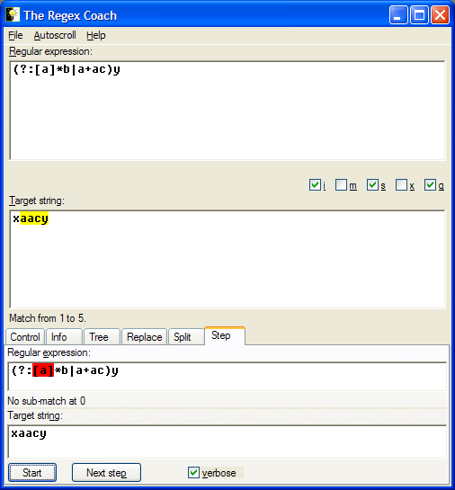

(?:[a]*b|a+ac)y into the regex
pane, and type the string xaacy into the target
pane. Click the "Start" button.

By pressing the "Next" button repeatedly you can now see a step-by-step visual tour of how the regex engine tries to match the target string.
While you do this the red background in the upper step pane (the step regex pane) highlights which subexpression the engine is currently trying to match. The message area below the step regex pane (the step regex message area) shows the result of this attempt. If there's a (sub-)match the corresponding part of the target string in the lower pane (the step target pane) is also highlighted in red.
The part of the target string before this match is either yellow (which means that this part has already matched) or grey (which means that this part isn't taken into consideration).
The following table shows what will happen in this particular example.
| step regex pane | step regex message | step target pane | |
|---|---|---|---|
| 1. | (?:[a]*b|a+ac)y | No sub-match at 0 | xaacy |
The initial state after the "Start" button has been pressed. The engine tries to match [a] against x (position 0) but doesn't succeed. | |||
| 2. | (?:[a]*b|a+ac)y | Sub-match from 0 to 0 | xaacy |
Which means that [a]* did succeed - zero repetitions, i.e. a zero-length match from 0 to 0. | |||
| 3. | (?:[a]*b|a+ac)y | No sub-match at 0 | xaacy |
Now we must match the b (still at the same position). Nope, doesn't work... | |||
| 4. | (?:[a]*b|a+ac)y | No sub-match at 0 | xaacy |
Which in turn means that the whole subexpression [a]*b didn't succeed. | |||
| 5. | (?:[a]*b|a+ac)y | No sub-match at 0 | xaacy |
So the engine tries the other half of the alternation - let's start with one a. Again, no match. | |||
| 6. | (?:[a]*b|a+ac)y | No sub-match at 0 | xaacy |
Which implies that a+ can't match. | |||
| 7. | (?:[a]*b|a+ac)y | No sub-match at 0 | xaacy |
Which in turn implies that a+ac can't match. | |||
| 8. | (?:[a]*b|a+ac)y | No sub-match at 0 | xaacy |
| So, finally, the whole alternation is doomed to fail at position 0. | |||
| 9. | (?:[a]*b|a+ac)y | Sub-match from 1 to 2 | xaacy |
We start anew at position 1. The x at position 0 now has a grey background because we don't look at it anymore. Again, we start with [a] and this time we suceed. The sub-match is shown with a red background in the step target pane. | |||
| 10. | (?:[a]*b|a+ac)y | Sub-match from 2 to 3 | xaacy |
[a] matches again at position 2. The match we have so far is marked with a yellow background. | |||
| 11. | (?:[a]*b|a+ac)y | Sub-match from 1 to 3 | xaacy |
So, [a]* can match the sequence aa. | |||
| 12. | (?:[a]*b|a+ac)y | No sub-match at 3 | xaacy |
But we can't match b from here. | |||
| 13. | (?:[a]*b|a+ac)y | Sub-match from 1 to 2 | xaacy |
Let's see if it helps to make the [a]* match shorter. (This is the technique known as backtracking.) | |||
| 14. | (?:[a]*b|a+ac)y | No sub-match at 2 | xaacy |
| Hmm, no... | |||
| 15. | (?:[a]*b|a+ac)y | Sub-match from 1 to 1 | xaacy |
Still shorter: a zero-length match for [a]*. | |||
| 16. | (?:[a]*b|a+ac)y | No sub-match at 1 | xaacy |
| No, didn't help either. | |||
| 17. | (?:[a]*b|a+ac)y | No sub-match at 1 | xaacy |
| So, the whole left side of the alternation didn't match. | |||
| 18. | (?:[a]*b|a+ac)y | Sub-match from 1 to 2 | xaacy |
Let's try the right side. The first a matches. | |||
| 19. | (?:[a]*b|a+ac)y | Sub-match from 2 to 3 | xaacy |
| And it matches again. | |||
| 20. | (?:[a]*b|a+ac)y | Sub-match from 1 to 3 | xaacy |
So that the repetition a+ can match the substring aa. | |||
| 21. | (?:[a]*b|a+ac)y | No sub-match at 3 | xaacy |
But that has eaten up all as, so the string ac behind the repetition can't match. | |||
| 22. | (?:[a]*b|a+ac)y | Sub-match from 1 to 2 | xaacy |
| Let's make the repetition shorter - backtracking again. | |||
| 23. | (?:[a]*b|a+ac)y | Sub-match from 2 to 4 | xaacy |
| This time it works! | |||
| 24. | (?:[a]*b|a+ac)y | Sub-match from 1 to 4 | xaacy |
| Which means that the whole right side of the alternation matched. | |||
| 25. | (?:[a]*b|a+ac)y | Sub-match from 1 to 4 | xaacy |
| Which of course means that the whole alternation matched. | |||
| 26. | (?:[a]*b|a+ac)y | Sub-match from 4 to 5 | xaacy |
Now only the y at the end remains - and succeeds. | |||
| 27. | (?:[a]*b|a+ac)y | Match from 1 to 5 | xaacy |
| That's it - we're through. | |||
Note that the "Next" button is disabled after the last step. The step panes now look exactly like their "big brothers" above them.
In case you're wondering what the "verbose" checkbox is for: Uncheck it and the stepper won't report more than one failure in a row, i.e. steps 4 to 8 and 17 above wouldn't have happened.